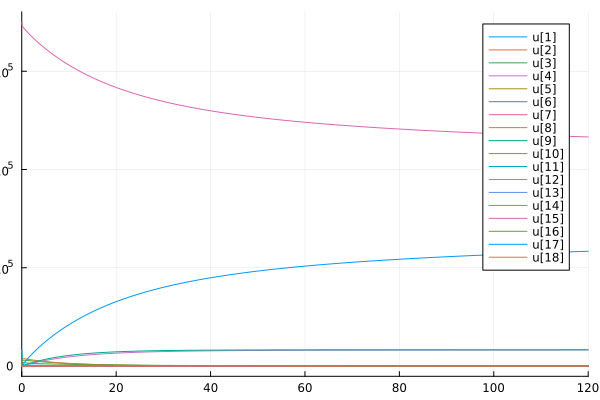
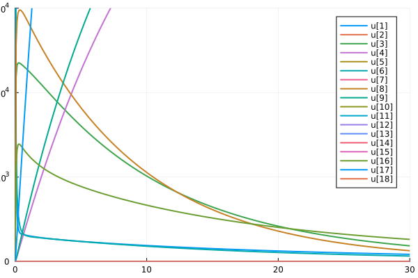
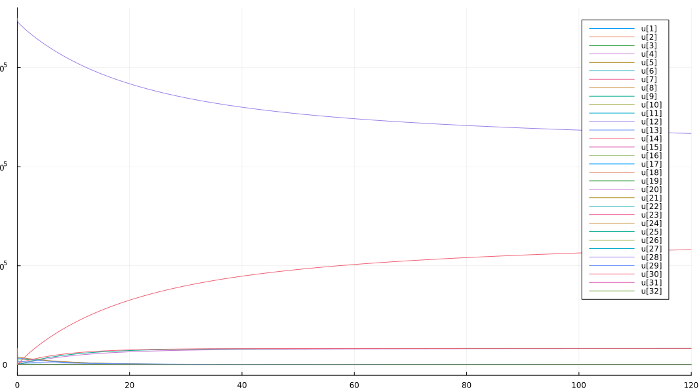
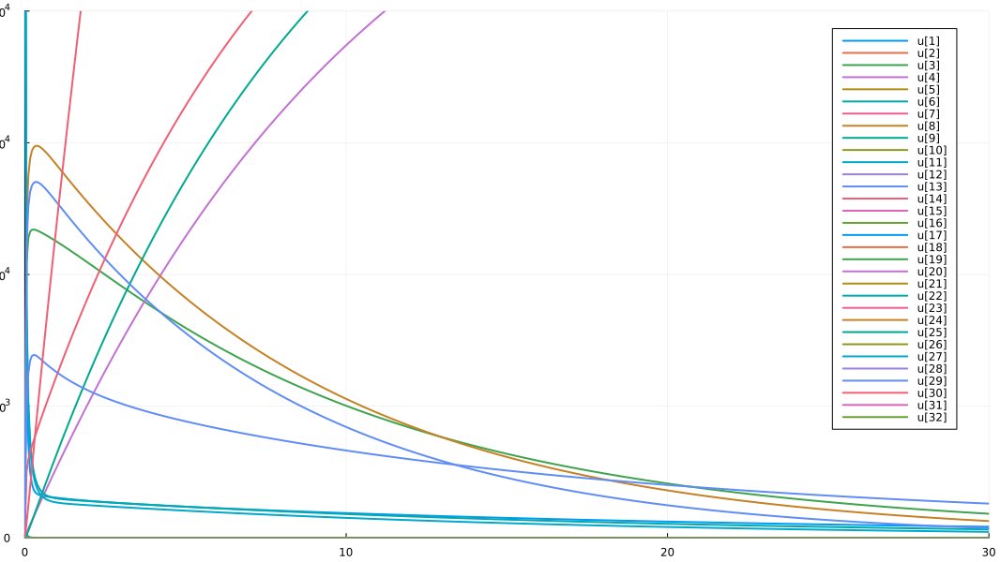
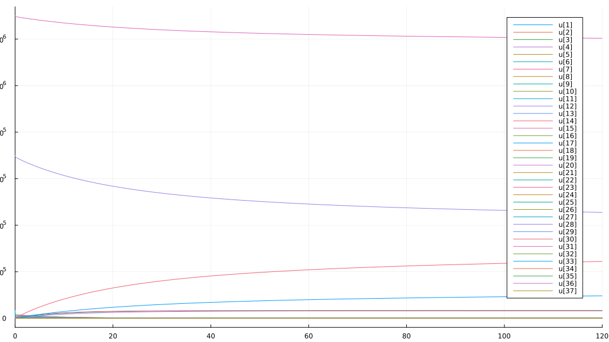
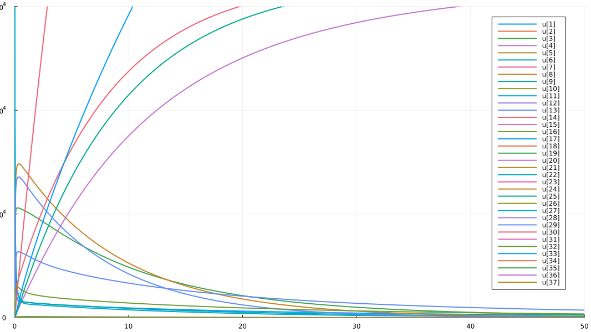

using AlgebraicPetri
using Catlab.Programs
using Catlab.Graphics
using Catlab.WiringDiagrams
using Catlab.CategoricalAlgebra
using DifferentialEquations
using Plots
display_uwd(ex, prog="neato") = to_graphviz(ex, box_labels=:name, junction_labels=:variable, graph_attrs=Dict(:overlap => "false"), prog=prog)
ode(x, t) = ODEProblem(vectorfield(x), concentrations(x), t, rates(x));
ob(x) = codom(Open([first(x)], LabelledReactionNet{Number,Int}([x]), [first(x)])).ob;
K = :K=>33000;
S = :S=>33000;
L = :L=>33000;
Kinact = :Kinact=>0;
Sinact = :Sinact=>0;
Linact = :Linact=>0;
E = :E=>700000;
G = :G=>1300000;
inact(in,on::Number) = begin
inact = Symbol(first(in), :inact)
Open(LabelledReactionNet{Number,Int}(unique((in, inact=>0)), ((Symbol(:inact_,first(in)),on),first(in)=>inact)))
end;
bind(in1, in2, on::Number, off::Number) = begin
out = Symbol(first(in1),first(in2))
Open(LabelledReactionNet{Number,Int}(unique((in1, in2,out=>0)), ((Symbol(:bind_,first(in1),first(in2)),on),(first(in1),first(in2))=>out),
((Symbol(:unbind_,out),off),out=>(first(in1),first(in2)))))
end;
deg(prod1,prod2,on::Number) = begin
in = Symbol(first(prod1),first(prod2))
prod2str = String(first(prod2))
degprod2 = Symbol(endswith(prod2str, "inact") ? first(prod2str) : prod2str, :deg)
Open(LabelledReactionNet{Number,Int}(unique((in=>0, prod1,degprod2=>0)), ((Symbol(:deg_,in),on),in=>(first(prod1),degprod2))));
end;
catX = @relation (X, Xinact, Xdeg) where (X, Xinact, Xdeg, XX, XXinact) begin
inactX(X, Xinact)
bindXX(X, XX)
degXX(XX, X, Xdeg)
bindXXinact(X, Xinact, XXinact)
degXXinact(XXinact, X, Xdeg)
end
display_uwd(catX)

-->
<!-- Title: G Pages: 1 -->
<svg width="326pt" height="188pt"
viewBox="0.00 0.00 325.71 187.57" xmlns="http://www.w3.org/2000/svg" xmlns:xlink="http://www.w3.org/1999/xlink">
<g id="graph0" class="graph" transform="scale(1 1) rotate(0) translate(4 183.5696)">
<title>G</title>
<polygon fill="%23ffffff" stroke="transparent" points="-4,4 -4,-183.5696 321.7111,-183.5696 321.7111,4 -4,4"/>
<!-- n1 -->
<g id="box1" class="node">
<title>n1</title>
<ellipse fill="none" stroke="%23000000" cx="32.3765" cy="-34.5611" rx="32.2534" ry="18"/>
<text text-anchor="middle" x="32.3765" y="-30.8611" font-family="Serif" font-size="14.00" fill="%23000000">inactX</text>
</g>
<!-- n9 -->
<!-- junction -->
<g id="junction1" class="node">
<title>n9</title>
<ellipse fill="%23000000" stroke="%23000000" cx="130.9146" cy="-72.476" rx="2.5" ry="2.5"/>
<text text-anchor="middle" x="122.9146" y="-78.776" font-family="Serif" font-size="14.00" fill="%23000000">X</text>
</g>
<!-- n1&%2345;&%2345;n9 -->
<g id="edge1" class="edge">
<title>n1&%2345;&%2345;n9</title>
<path fill="none" stroke="%23000000" d="M59.0423,-44.8214C84.121,-54.471 119.1752,-67.959 128.5383,-71.5616"/>
</g>
<!-- n10 -->
<!-- junction -->
<g id="junction2" class="node">
<title>n10</title>
<ellipse fill="%23000000" stroke="%23000000" cx="74.2301" cy="-94.836" rx="2.5" ry="2.5"/>
<text text-anchor="middle" x="48.2301" y="-101.136" font-family="Serif" font-size="14.00" fill="%23000000">Xinact</text>
</g>
<!-- n1&%2345;&%2345;n10 -->
<g id="edge7" class="edge">
<title>n1&%2345;&%2345;n10</title>
<path fill="none" stroke="%23000000" d="M44.2581,-51.6722C54.5051,-66.4293 68.3351,-86.3463 72.7864,-92.7568"/>
</g>
<!-- n2 -->
<g id="box2" class="node">
<title>n2</title>
<ellipse fill="none" stroke="%23000000" cx="105.7565" cy="-18" rx="35.8171" ry="18"/>
<text text-anchor="middle" x="105.7565" y="-14.3" font-family="Serif" font-size="14.00" fill="%23000000">bindXX</text>
</g>
<!-- n2&%2345;&%2345;n9 -->
<g id="edge2" class="edge">
<title>n2&%2345;&%2345;n9</title>
<path fill="none" stroke="%23000000" d="M113.8551,-35.5364C119.7158,-48.2267 127.0689,-64.1488 129.8144,-70.0936"/>
</g>
<!-- n12 -->
<!-- junction -->
<g id="junction4" class="node">
<title>n12</title>
<ellipse fill="%23000000" stroke="%23000000" cx="181.4993" cy="-10.7668" rx="2.5" ry="2.5"/>
<text text-anchor="middle" x="167.9993" y="-17.0668" font-family="Serif" font-size="14.00" fill="%23000000">XX</text>
</g>
<!-- n2&%2345;&%2345;n12 -->
<g id="edge13" class="edge">
<title>n2&%2345;&%2345;n12</title>
<path fill="none" stroke="%23000000" d="M141.41,-14.5952C156.7579,-13.1295 172.5933,-11.6173 178.7868,-11.0258"/>
</g>
<!-- n3 -->
<g id="box3" class="node">
<title>n3</title>
<ellipse fill="none" stroke="%23000000" cx="195.4978" cy="-57.1375" rx="32.9303" ry="18"/>
<text text-anchor="middle" x="195.4978" y="-53.4375" font-family="Serif" font-size="14.00" fill="%23000000">degXX</text>
</g>
<!-- n3&%2345;&%2345;n9 -->
<g id="edge3" class="edge">
<title>n3&%2345;&%2345;n9</title>
<path fill="none" stroke="%23000000" d="M165.0973,-64.3576C152.2724,-67.4035 139.0484,-70.5442 133.5541,-71.8491"/>
</g>
<!-- n11 -->
<!-- junction -->
<g id="junction3" class="node">
<title>n11</title>
<ellipse fill="%23000000" stroke="%23000000" cx="227.5872" cy="-98.7763" rx="2.5" ry="2.5"/>
<text text-anchor="middle" x="206.5872" y="-105.0763" font-family="Serif" font-size="14.00" fill="%23000000">Xdeg</text>
</g>
<!-- n3&%2345;&%2345;n11 -->
<g id="edge10" class="edge">
<title>n3&%2345;&%2345;n11</title>
<path fill="none" stroke="%23000000" d="M208.5498,-74.0736C215.2129,-82.7195 222.5899,-92.2918 225.8619,-96.5376"/>
</g>
<!-- n3&%2345;&%2345;n12 -->
<g id="edge14" class="edge">
<title>n3&%2345;&%2345;n12</title>
<path fill="none" stroke="%23000000" d="M190.1257,-39.342C187.1649,-29.5344 183.793,-18.3647 182.292,-13.3928"/>
</g>
<!-- n4 -->
<g id="box4" class="node">
<title>n4</title>
<ellipse fill="none" stroke="%23000000" cx="108.1766" cy="-157.1289" rx="57.2008" ry="18"/>
<text text-anchor="middle" x="108.1766" y="-153.4289" font-family="Serif" font-size="14.00" fill="%23000000">bindXXinact</text>
</g>
<!-- n4&%2345;&%2345;n9 -->
<g id="edge4" class="edge">
<title>n4&%2345;&%2345;n9</title>
<path fill="none" stroke="%23000000" d="M112.9987,-139.1762C118.6825,-118.0156 127.6779,-84.5259 130.2232,-75.0499"/>
</g>
<!-- n4&%2345;&%2345;n10 -->
<g id="edge8" class="edge">
<title>n4&%2345;&%2345;n10</title>
<path fill="none" stroke="%23000000" d="M98.3578,-139.1112C90.212,-124.1632 79.3751,-104.2772 75.5976,-97.3454"/>
</g>
<!-- n13 -->
<!-- junction -->
<g id="junction5" class="node">
<title>n13</title>
<ellipse fill="%23000000" stroke="%23000000" cx="183.652" cy="-162.0696" rx="2.5" ry="2.5"/>
<text text-anchor="middle" x="210.152" y="-168.3696" font-family="Serif" font-size="14.00" fill="%23000000">XXinact</text>
</g>
<!-- n4&%2345;&%2345;n13 -->
<g id="edge15" class="edge">
<title>n4&%2345;&%2345;n13</title>
<path fill="none" stroke="%23000000" d="M164.2152,-160.7972C171.5101,-161.2747 177.6012,-161.6735 180.9268,-161.8912"/>
</g>
<!-- n5 -->
<g id="box5" class="node">
<title>n5</title>
<ellipse fill="none" stroke="%23000000" cx="263.5541" cy="-147.1594" rx="54.3144" ry="18"/>
<text text-anchor="middle" x="263.5541" y="-143.4594" font-family="Serif" font-size="14.00" fill="%23000000">degXXinact</text>
</g>
<!-- n5&%2345;&%2345;n9 -->
<g id="edge5" class="edge">
<title>n5&%2345;&%2345;n9</title>
<path fill="none" stroke="%23000000" d="M235.7485,-131.5033C201.1084,-111.999 145.0154,-80.4155 133.1594,-73.7399"/>
</g>
<!-- n5&%2345;&%2345;n11 -->
<g id="edge11" class="edge">
<title>n5&%2345;&%2345;n11</title>
<path fill="none" stroke="%23000000" d="M250.3656,-129.4181C242.3461,-118.6301 232.9542,-105.9961 229.229,-100.9849"/>
</g>
<!-- n5&%2345;&%2345;n13 -->
<g id="edge16" class="edge">
<title>n5&%2345;&%2345;n13</title>
<path fill="none" stroke="%23000000" d="M216.1512,-156.005C203.2471,-158.413 191.4184,-160.6203 186.3105,-161.5735"/>
</g>
<!-- n6 -->
<!-- n6&%2345;&%2345;n9 -->
<g id="edge6" class="edge">
<title>n6&%2345;&%2345;n9</title>
<path fill="none" stroke="%23000000" d="M160.6035,-110.7186C157.2183,-106.3582 138.4097,-82.1305 132.6146,-74.6658"/>
</g>
<!-- n7 -->
<!-- n7&%2345;&%2345;n10 -->
<g id="edge9" class="edge">
<title>n7&%2345;&%2345;n10</title>
<path fill="none" stroke="%23000000" d="M31.2911,-144.3218C35.4657,-139.5107 65.2099,-105.2314 72.5808,-96.7368"/>
</g>
<!-- n8 -->
<!-- n8&%2345;&%2345;n11 -->
<g id="edge12" class="edge">
<title>n8&%2345;&%2345;n11</title>
<path fill="none" stroke="%23000000" d="M264.2961,-34.4574C260.7272,-40.7106 235.2986,-85.2648 228.9972,-96.3057"/>
</g>
</g>
</svg>
)
catXsubY = @relation (X, Xinact, Xdeg, Y, Ydeg) where (X, Xinact, Xdeg, Y, XY, Ydeg) begin
bindXY(X, Y, XY)
degXY(XY, X, Ydeg)
end
display_uwd(catXsubY)

-->
<!-- Title: G Pages: 1 -->
<svg width="209pt" height="148pt"
viewBox="0.00 0.00 208.60 148.32" xmlns="http://www.w3.org/2000/svg" xmlns:xlink="http://www.w3.org/1999/xlink">
<g id="graph0" class="graph" transform="scale(1 1) rotate(0) translate(4 144.3196)">
<title>G</title>
<polygon fill="%23ffffff" stroke="transparent" points="-4,4 -4,-144.3196 204.6048,-144.3196 204.6048,4 -4,4"/>
<!-- n1 -->
<g id="box1" class="node">
<title>n1</title>
<ellipse fill="none" stroke="%23000000" cx="59.2714" cy="-65.1722" rx="35.1405" ry="18"/>
<text text-anchor="middle" x="59.2714" y="-61.4722" font-family="Serif" font-size="14.00" fill="%23000000">bindXY</text>
</g>
<!-- n8 -->
<!-- junction -->
<g id="junction1" class="node">
<title>n8</title>
<ellipse fill="%23000000" stroke="%23000000" cx="103.5617" cy="-56.7751" rx="2.5" ry="2.5"/>
<text text-anchor="middle" x="106.5617" y="-63.0751" font-family="Serif" font-size="14.00" fill="%23000000">X</text>
</g>
<!-- n1&%2345;&%2345;n8 -->
<g id="edge1" class="edge">
<title>n1&%2345;&%2345;n8</title>
<path fill="none" stroke="%23000000" d="M92.3854,-58.8941C95.9898,-58.2107 99.0755,-57.6257 101.0856,-57.2446"/>
</g>
<!-- n11 -->
<!-- junction -->
<g id="junction4" class="node">
<title>n11</title>
<ellipse fill="%23000000" stroke="%23000000" cx="16.1628" cy="-32.359" rx="2.5" ry="2.5"/>
<text text-anchor="middle" x="8.6628" y="-38.659" font-family="Serif" font-size="14.00" fill="%23000000">Y</text>
</g>
<!-- n1&%2345;&%2345;n11 -->
<g id="edge6" class="edge">
<title>n1&%2345;&%2345;n11</title>
<path fill="none" stroke="%23000000" d="M39.4835,-50.1101C30.9841,-43.6406 22.1159,-36.8903 18.213,-33.9196"/>
</g>
<!-- n12 -->
<!-- junction -->
<g id="junction5" class="node">
<title>n12</title>
<ellipse fill="%23000000" stroke="%23000000" cx="74.1223" cy="-113.4908" rx="2.5" ry="2.5"/>
<text text-anchor="middle" x="61.1223" y="-119.7908" font-family="Serif" font-size="14.00" fill="%23000000">XY</text>
</g>
<!-- n1&%2345;&%2345;n12 -->
<g id="edge8" class="edge">
<title>n1&%2345;&%2345;n12</title>
<path fill="none" stroke="%23000000" d="M64.8014,-83.1643C68.0341,-93.6822 71.7805,-105.8714 73.359,-111.0073"/>
</g>
<!-- n2 -->
<g id="box2" class="node">
<title>n2</title>
<ellipse fill="none" stroke="%23000000" cx="138.7047" cy="-98.365" rx="32.2534" ry="18"/>
<text text-anchor="middle" x="138.7047" y="-94.665" font-family="Serif" font-size="14.00" fill="%23000000">degXY</text>
</g>
<!-- n2&%2345;&%2345;n8 -->
<g id="edge2" class="edge">
<title>n2&%2345;&%2345;n8</title>
<path fill="none" stroke="%23000000" d="M124.8153,-81.9276C117.448,-73.2088 109.1765,-63.4199 105.5012,-59.0704"/>
</g>
<!-- n2&%2345;&%2345;n12 -->
<g id="edge9" class="edge">
<title>n2&%2345;&%2345;n12</title>
<path fill="none" stroke="%23000000" d="M108.6824,-105.3965C95.7699,-108.4207 82.3712,-111.5588 76.7999,-112.8637"/>
</g>
<!-- n13 -->
<!-- junction -->
<g id="junction6" class="node">
<title>n13</title>
<ellipse fill="%23000000" stroke="%23000000" cx="187.4699" cy="-43.3066" rx="2.5" ry="2.5"/>
<text text-anchor="middle" x="166.4699" y="-49.6066" font-family="Serif" font-size="14.00" fill="%23000000">Ydeg</text>
</g>
<!-- n2&%2345;&%2345;n13 -->
<g id="edge10" class="edge">
<title>n2&%2345;&%2345;n13</title>
<path fill="none" stroke="%23000000" d="M153.0721,-82.1435C164.7596,-68.9478 180.1628,-51.5567 185.5282,-45.499"/>
</g>
<!-- n3 -->
<!-- n3&%2345;&%2345;n8 -->
<g id="edge3" class="edge">
<title>n3&%2345;&%2345;n8</title>
<path fill="none" stroke="%23000000" d="M122.4142,-25.2978C119.9956,-29.336 109.0617,-47.5921 105.0465,-54.2961"/>
</g>
<!-- n4 -->
<!-- n9 -->
<!-- junction -->
<g id="junction2" class="node">
<title>n9</title>
<ellipse fill="%23000000" stroke="%23000000" cx="198.1048" cy="-134.5" rx="2.5" ry="2.5"/>
<text text-anchor="middle" x="172.1048" y="-120.8" font-family="Serif" font-size="14.00" fill="%23000000">Xinact</text>
</g>
<!-- n4&%2345;&%2345;n9 -->
<g id="edge4" class="edge">
<title>n4&%2345;&%2345;n9</title>
<path fill="none" stroke="%23000000" d="M163.3801,-139.6881C167.8349,-139.0225 187.9744,-136.0135 195.3701,-134.9086"/>
</g>
<!-- n5 -->
<!-- n10 -->
<!-- junction -->
<g id="junction3" class="node">
<title>n10</title>
<ellipse fill="%23000000" stroke="%23000000" cx="180.1048" cy="-17.5" rx="2.5" ry="2.5"/>
<text text-anchor="middle" x="159.1048" y="-3.8" font-family="Serif" font-size="14.00" fill="%23000000">Xdeg</text>
</g>
<!-- n5&%2345;&%2345;n10 -->
<g id="edge5" class="edge">
<title>n5&%2345;&%2345;n10</title>
<path fill="none" stroke="%23000000" d="M145.3801,-22.6881C149.8349,-22.0225 169.9744,-19.0135 177.3701,-17.9086"/>
</g>
<!-- n6 -->
<!-- n6&%2345;&%2345;n11 -->
<g id="edge7" class="edge">
<title>n6&%2345;&%2345;n11</title>
<path fill="none" stroke="%23000000" d="M.6759,-95.9819C2.1816,-89.7964 12.9095,-45.7242 15.5679,-34.8028"/>
</g>
<!-- n7 -->
<!-- n7&%2345;&%2345;n13 -->
<g id="edge11" class="edge">
<title>n7&%2345;&%2345;n13</title>
<path fill="none" stroke="%23000000" d="M191.0422,-106.8939C190.698,-100.767 188.2643,-57.4479 187.624,-46.0494"/>
</g>
</g>
</svg>
)
catXY = @relation (X, Xinact, Xdeg, Y, Yinact, Ydeg) where (X, Xinact, Xdeg, Y, Yinact, Ydeg, XY, XYinact) begin
bindXY(X, Y, XY)
degXY(XY, X, Ydeg)
bindXYinact(X, Yinact, XYinact)
degXYinact(XYinact, X, Ydeg)
end
display_uwd(catXY)

-->
<!-- Title: G Pages: 1 -->
<svg width="343pt" height="385pt"
viewBox="0.00 0.00 343.01 385.38" xmlns="http://www.w3.org/2000/svg" xmlns:xlink="http://www.w3.org/1999/xlink">
<g id="graph0" class="graph" transform="scale(1 1) rotate(0) translate(4 381.3843)">
<title>G</title>
<polygon fill="%23ffffff" stroke="transparent" points="-4,4 -4,-381.3843 339.0148,-381.3843 339.0148,4 -4,4"/>
<!-- n1 -->
<g id="box1" class="node">
<title>n1</title>
<ellipse fill="none" stroke="%23000000" cx="127.4615" cy="-268.9069" rx="35.1405" ry="18"/>
<text text-anchor="middle" x="127.4615" y="-265.2069" font-family="Serif" font-size="14.00" fill="%23000000">bindXY</text>
</g>
<!-- n11 -->
<!-- junction -->
<g id="junction1" class="node">
<title>n11</title>
<ellipse fill="%23000000" stroke="%23000000" cx="136.7683" cy="-185.5591" rx="2.5" ry="2.5"/>
<text text-anchor="middle" x="128.7683" y="-191.8591" font-family="Serif" font-size="14.00" fill="%23000000">X</text>
</g>
<!-- n1&%2345;&%2345;n11 -->
<g id="edge1" class="edge">
<title>n1&%2345;&%2345;n11</title>
<path fill="none" stroke="%23000000" d="M129.4809,-250.8217C131.8118,-229.9471 135.4574,-197.2988 136.4884,-188.0663"/>
</g>
<!-- n14 -->
<!-- junction -->
<g id="junction4" class="node">
<title>n14</title>
<ellipse fill="%23000000" stroke="%23000000" cx="12.5" cy="-244.5303" rx="2.5" ry="2.5"/>
<text text-anchor="middle" x="5" y="-250.8303" font-family="Serif" font-size="14.00" fill="%23000000">Y</text>
</g>
<!-- n1&%2345;&%2345;n14 -->
<g id="edge8" class="edge">
<title>n1&%2345;&%2345;n14</title>
<path fill="none" stroke="%23000000" d="M94.8256,-261.9868C65.6175,-255.7934 25.8113,-247.3528 15.1934,-245.1014"/>
</g>
<!-- n17 -->
<!-- junction -->
<g id="junction7" class="node">
<title>n17</title>
<ellipse fill="%23000000" stroke="%23000000" cx="179.8486" cy="-359.8843" rx="2.5" ry="2.5"/>
<text text-anchor="middle" x="166.8486" y="-366.1843" font-family="Serif" font-size="14.00" fill="%23000000">XY</text>
</g>
<!-- n1&%2345;&%2345;n17 -->
<g id="edge15" class="edge">
<title>n1&%2345;&%2345;n17</title>
<path fill="none" stroke="%23000000" d="M137.5622,-286.4483C150.7635,-309.3741 172.8688,-347.7629 178.5076,-357.5555"/>
</g>
<!-- n2 -->
<g id="box2" class="node">
<title>n2</title>
<ellipse fill="none" stroke="%23000000" cx="232.3287" cy="-238.6243" rx="32.2534" ry="18"/>
<text text-anchor="middle" x="232.3287" y="-234.9243" font-family="Serif" font-size="14.00" fill="%23000000">degXY</text>
</g>
<!-- n2&%2345;&%2345;n11 -->
<g id="edge2" class="edge">
<title>n2&%2345;&%2345;n11</title>
<path fill="none" stroke="%23000000" d="M209.1962,-225.7787C184.671,-212.1597 148.2149,-191.9155 138.9638,-186.7783"/>
</g>
<!-- n16 -->
<!-- junction -->
<g id="junction6" class="node">
<title>n16</title>
<ellipse fill="%23000000" stroke="%23000000" cx="332.5148" cy="-176.1929" rx="2.5" ry="2.5"/>
<text text-anchor="middle" x="311.5148" y="-182.4929" font-family="Serif" font-size="14.00" fill="%23000000">Ydeg</text>
</g>
<!-- n2&%2345;&%2345;n16 -->
<g id="edge12" class="edge">
<title>n2&%2345;&%2345;n16</title>
<path fill="none" stroke="%23000000" d="M254.0676,-225.0776C279.8499,-209.0113 320.5743,-183.6337 330.3525,-177.5403"/>
</g>
<!-- n2&%2345;&%2345;n17 -->
<g id="edge16" class="edge">
<title>n2&%2345;&%2345;n17</title>
<path fill="none" stroke="%23000000" d="M224.6977,-256.2566C211.7344,-286.2093 186.2871,-345.0076 180.8756,-357.5114"/>
</g>
<!-- n3 -->
<g id="box3" class="node">
<title>n3</title>
<ellipse fill="none" stroke="%23000000" cx="116.691" cy="-102.9142" rx="56.5233" ry="18"/>
<text text-anchor="middle" x="116.691" y="-99.2142" font-family="Serif" font-size="14.00" fill="%23000000">bindXYinact</text>
</g>
<!-- n3&%2345;&%2345;n11 -->
<g id="edge3" class="edge">
<title>n3&%2345;&%2345;n11</title>
<path fill="none" stroke="%23000000" d="M121.1468,-121.2558C126.1375,-141.7993 133.8276,-173.4541 136.1089,-182.8447"/>
</g>
<!-- n15 -->
<!-- junction -->
<g id="junction5" class="node">
<title>n15</title>
<ellipse fill="%23000000" stroke="%23000000" cx="168.0595" cy="-2.5" rx="2.5" ry="2.5"/>
<text text-anchor="middle" x="142.5595" y="-8.8" font-family="Serif" font-size="14.00" fill="%23000000">Yinact</text>
</g>
<!-- n3&%2345;&%2345;n15 -->
<g id="edge10" class="edge">
<title>n3&%2345;&%2345;n15</title>
<path fill="none" stroke="%23000000" d="M125.8746,-84.9621C138.8031,-59.6898 161.4045,-15.509 166.8529,-4.8587"/>
</g>
<!-- n18 -->
<!-- junction -->
<g id="junction8" class="node">
<title>n18</title>
<ellipse fill="%23000000" stroke="%23000000" cx="314.3448" cy="-20.4726" rx="2.5" ry="2.5"/>
<text text-anchor="middle" x="283.3448" y="-26.7726" font-family="Serif" font-size="14.00" fill="%23000000">XYinact</text>
</g>
<!-- n3&%2345;&%2345;n18 -->
<g id="edge17" class="edge">
<title>n3&%2345;&%2345;n18</title>
<path fill="none" stroke="%23000000" d="M151.1196,-88.5539C202.4398,-67.1483 294.7972,-28.6259 311.6632,-21.5911"/>
</g>
<!-- n4 -->
<g id="box4" class="node">
<title>n4</title>
<ellipse fill="none" stroke="%23000000" cx="225.9003" cy="-121.4341" rx="53.6367" ry="18"/>
<text text-anchor="middle" x="225.9003" y="-117.7341" font-family="Serif" font-size="14.00" fill="%23000000">degXYinact</text>
</g>
<!-- n4&%2345;&%2345;n11 -->
<g id="edge4" class="edge">
<title>n4&%2345;&%2345;n11</title>
<path fill="none" stroke="%23000000" d="M202.9466,-137.9479C180.2512,-154.2758 147.6892,-177.7022 138.9799,-183.968"/>
</g>
<!-- n4&%2345;&%2345;n16 -->
<g id="edge13" class="edge">
<title>n4&%2345;&%2345;n16</title>
<path fill="none" stroke="%23000000" d="M255.3154,-136.5421C282.6815,-150.5977 320.6395,-170.0936 330.2394,-175.0243"/>
</g>
<!-- n4&%2345;&%2345;n18 -->
<g id="edge18" class="edge">
<title>n4&%2345;&%2345;n18</title>
<path fill="none" stroke="%23000000" d="M241.3062,-103.8479C263.4786,-78.5376 302.7695,-33.6861 312.2458,-22.8687"/>
</g>
<!-- n5 -->
<!-- n5&%2345;&%2345;n11 -->
<g id="edge5" class="edge">
<title>n5&%2345;&%2345;n11</title>
<path fill="none" stroke="%23000000" d="M8.3072,-144.9866C18.3719,-148.1654 117.3677,-179.4317 134.3082,-184.7821"/>
</g>
<!-- n6 -->
<!-- n12 -->
<!-- junction -->
<g id="junction2" class="node">
<title>n12</title>
<ellipse fill="%23000000" stroke="%23000000" cx="241.0864" cy="-178.5" rx="2.5" ry="2.5"/>
<text text-anchor="middle" x="215.0864" y="-164.8" font-family="Serif" font-size="14.00" fill="%23000000">Xinact</text>
</g>
<!-- n6&%2345;&%2345;n12 -->
<g id="edge6" class="edge">
<title>n6&%2345;&%2345;n12</title>
<path fill="none" stroke="%23000000" d="M206.3617,-183.6881C210.8166,-183.0225 230.956,-180.0135 238.3517,-178.9086"/>
</g>
<!-- n7 -->
<!-- n13 -->
<!-- junction -->
<g id="junction3" class="node">
<title>n13</title>
<ellipse fill="%23000000" stroke="%23000000" cx="109.0864" cy="-222.5" rx="2.5" ry="2.5"/>
<text text-anchor="middle" x="88.0864" y="-208.8" font-family="Serif" font-size="14.00" fill="%23000000">Xdeg</text>
</g>
<!-- n7&%2345;&%2345;n13 -->
<g id="edge7" class="edge">
<title>n7&%2345;&%2345;n13</title>
<path fill="none" stroke="%23000000" d="M74.3617,-227.6881C78.8166,-227.0225 98.956,-224.0135 106.3517,-222.9086"/>
</g>
<!-- n8 -->
<!-- n8&%2345;&%2345;n14 -->
<g id="edge9" class="edge">
<title>n8&%2345;&%2345;n14</title>
<path fill="none" stroke="%23000000" d="M25.0727,-354.8224C24.0961,-346.2551 14.5638,-262.6343 12.785,-247.0307"/>
</g>
<!-- n9 -->
<!-- n9&%2345;&%2345;n15 -->
<g id="edge11" class="edge">
<title>n9&%2345;&%2345;n15</title>
<path fill="none" stroke="%23000000" d="M19.6969,-14.6001C29.524,-13.7986 145.3444,-4.3526 165.1785,-2.735"/>
</g>
<!-- n10 -->
<!-- n10&%2345;&%2345;n16 -->
<g id="edge14" class="edge">
<title>n10&%2345;&%2345;n16</title>
<path fill="none" stroke="%23000000" d="M319.4242,-335.6975C320.2987,-325.0422 330.6859,-198.4771 332.3036,-178.7663"/>
</g>
</g>
</svg>
)
rxns = Dict(
:K => [inact(K, 7.494e-10)
bind(K, K, 7.814e-4, 3.867e-3)
deg(K, K, 2.265e-1)
bind(K, Kinact, 7.814e-4, 3.867e-3)
deg(K, Kinact, 2.265e-1)],
:S => [inact(S, 7.494e-10)
bind(S, S, 7.814e-4, 3.867e-3)
deg(S, S, 2.265e-1)
bind(S, Sinact, 7.814e-4, 3.867e-3)
deg(S, Sinact, 2.265e-1)],
:L => [inact(L, 7.494e-10)
bind(L, L, 7.814e-4, 3.867e-3)
deg(L, L, 2.265e-1)
bind(L, Linact, 7.814e-4, 3.867e-3)
deg(L, Linact, 2.265e-1)],
:KE => [bind(K, E, 9.668e-6, 1e-2)
deg(K, E, 1.728e0)],
:KG => [bind(K, G, 2.764e-6, 8.78e-1)
deg(K, G, 1.502)],
:SE => [bind(S, E, 4.197e-7, 1.06e-3)
deg(S, E, 1.384e4)],
:SG => [bind(S, G, 5.152e-8, 3.894e-3)
deg(S, G, 8.755e-1)],
:LE => [bind(L, E, 1.977e-8, 1e-2)
deg(L, E, 1.066e2)],
:LG => [bind(L, G, 3.394e-8, 2.365e1)
deg(L, G, 4.352)],
:KS => [bind(K, S, 8.822e-4, 4.114e5)
deg(K, S, 9e-10)
bind(K, Sinact, 8.822e-4, 4.114e5)
deg(K, Sinact, 9e-10)],
:KL => [bind(K, L, 1.756e-4, 3.729e4)
deg(K, L, 6.505e6)
bind(K, Linact, 1.756e-4, 3.729e4)
deg(K, Linact, 6.505e6)],
:SK => [bind(S, K, 8.822e-4, 4.114e5)
deg(S, K, 9e-10)
bind(S, Kinact, 8.822e-4, 4.114e5)
deg(S, Kinact, 9e-10)],
:SL => [bind(S, L, 1e-3, 5e2)
deg(S, L, 1e-7)
bind(S, Linact, 1e-3, 5e2)
deg(S, Linact, 1e-7)],
:LK => [bind(L, K, 1e-3, 4.118e3)
deg(L, K, 3.234e1)
bind(L, Kinact, 1e-3, 4.118e3)
deg(L, Kinact, 3.234e1)],
:LS => [bind(L, S, 1.056e-12, 5e2)
deg(L, S, 5e-1)
bind(L, Sinact, 1.056e-12, 5e2)
deg(L, Sinact, 5e-1)]
);
cat(cat) = begin
catsym = first(cat)
out = oapply(catX, Dict([:inactX, :bindXX, :degXX, :bindXXinact, :degXXinact] .=> rxns[catsym]), Dict(
:X=>ob(cat),
:Xinact=>ob(Symbol(catsym,:inact)=>0),
:Xdeg=>ob(Symbol(catsym,:deg)=>0),
:XX=>ob(Symbol(catsym,catsym)=>0),
:XXinact=>ob(Symbol(catsym,catsym,:inact)=>0)))
bundle_legs(out, [[1,2,3]])
end
cat_sub(cat1, sub) = begin
catsym = first(cat1)
subsym = first(sub)
catsub = Symbol(catsym, subsym)
out = oapply(catXsubY, Dict([:bindXY, :degXY] .=> rxns[catsub]), Dict(
:X=>ob(cat1),
:Xinact=>ob(Symbol(catsym,:inact)=>0),
:Xdeg=>ob(Symbol(catsym,:deg)=>0),
:Y=>ob(sub),
:XY=>ob(Symbol(catsym,subsym)=>0),
:Ydeg=>ob(Symbol(subsym,:deg)=>0)))
bundle_legs(out, [[1,2,3], [4,5]])
end
cat_cat(cat1, cat2) = begin
cat1sym = first(cat1)
cat2sym = first(cat2)
catcat = Symbol(cat1sym, cat2sym)
out = oapply(catXY, Dict([:bindXY, :degXY, :bindXYinact, :degXYinact] .=> rxns[catcat]), Dict(
:X=>ob(cat1),
:Xinact=>ob(Symbol(cat1sym,:inact)=>0),
:Xdeg=>ob(Symbol(cat1sym,:deg)=>0),
:Y=>ob(cat2),
:Yinact=>ob(Symbol(cat2sym,:inact)=>0),
:Ydeg=>ob(Symbol(cat2sym,:deg)=>0),
:XY=>ob(catcat=>0),
:XYinact=>ob(Symbol(catcat,:inact)=>0)))
bundle_legs(out, [[1,2,3], [4,5,6]])
end
functor(x) = oapply(x, Dict(
:catK=>cat(K),
:catS=>cat(S),
:catL=>cat(L),
:catKcatS=>cat_cat(K,S),
:catKcatL=>cat_cat(K,L),
:catScatK=>cat_cat(S,K),
:catScatL=>cat_cat(S,L),
:catLcatK=>cat_cat(L,K),
:catLcatS=>cat_cat(L,S),
:catKsubE=>cat_sub(K,E),
:catSsubE=>cat_sub(S,E),
:catLsubE=>cat_sub(L,E),
:catKsubG=>cat_sub(K,G),
:catSsubG=>cat_sub(S,G),
:catLsubG=>cat_sub(L,G)));
function enzyme_uwd(enzymes::Array{Symbol}, substrates::Array{Symbol})
rel = RelationDiagram(0)
chemicals = vcat(substrates, enzymes)
subs = add_junctions!(rel, length(substrates), variable=substrates)
enzs = add_junctions!(rel, length(enzymes), variable=enzymes)
nsubs = length(subs)
nenzs = length(enzs)
catx = add_parts!(rel, :Box, nenzs, name=[Symbol("cat$i") for i in enzymes])
add_parts!(rel, :Port, nenzs, junction=enzs, box=catx)
for x in 1:nenzs
for y in 1:nenzs
if y != x
catxy = add_part!(rel, :Box, name=Symbol("cat$(enzymes[x])cat$(enzymes[y])"))
add_parts!(rel, :Port, 2, junction=[enzs[x], enzs[y]], box=catxy)
end
end
end
for x in 1:nenzs
for y in 1:nsubs
catxy = add_part!(rel, :Box, name=Symbol("cat$(enzymes[x])sub$(substrates[y])"))
add_parts!(rel, :Port, 2, junction=[enzs[x], subs[y]], box=catxy)
end
end
add_parts!(rel, :OuterPort, length(chemicals), outer_junction = vcat(subs, enzs))
rel
end
enzyme_reaction(args...) = enzyme_uwd(args...) |> functor |> apex
enzyme_reaction (generic function with 1 method)
KSE = @relation (K, S, E) begin
catK(K)
catS(S)
catKcatS(K, S)
catScatK(S, K)
catKsubE(K, E)
catSsubE(S, E)
end
display_uwd(KSE)

-->
<!-- Title: G Pages: 1 -->
<svg width="282pt" height="195pt"
viewBox="0.00 0.00 281.85 195.38" xmlns="http://www.w3.org/2000/svg" xmlns:xlink="http://www.w3.org/1999/xlink">
<g id="graph0" class="graph" transform="scale(1 1) rotate(0) translate(4 191.3773)">
<title>G</title>
<polygon fill="%23ffffff" stroke="transparent" points="-4,4 -4,-191.3773 277.8545,-191.3773 277.8545,4 -4,4"/>
<!-- n1 -->
<g id="box1" class="node">
<title>n1</title>
<ellipse fill="none" stroke="%23000000" cx="50.7324" cy="-21.2549" rx="24.9497" ry="18"/>
<text text-anchor="middle" x="50.7324" y="-17.5549" font-family="Serif" font-size="14.00" fill="%23000000">catK</text>
</g>
<!-- n10 -->
<!-- junction -->
<g id="junction1" class="node">
<title>n10</title>
<ellipse fill="%23000000" stroke="%23000000" cx="105.7002" cy="-68.1961" rx="2.5" ry="2.5"/>
<text text-anchor="middle" x="97.7002" y="-74.4961" font-family="Serif" font-size="14.00" fill="%23000000">K</text>
</g>
<!-- n1&%2345;&%2345;n10 -->
<g id="edge1" class="edge">
<title>n1&%2345;&%2345;n10</title>
<path fill="none" stroke="%23000000" d="M66.9273,-35.0849C80.1013,-46.3352 97.4637,-61.1623 103.5115,-66.327"/>
</g>
<!-- n2 -->
<g id="box2" class="node">
<title>n2</title>
<ellipse fill="none" stroke="%23000000" cx="246.861" cy="-162.2265" rx="24.2711" ry="18"/>
<text text-anchor="middle" x="246.861" y="-158.5265" font-family="Serif" font-size="14.00" fill="%23000000">catS</text>
</g>
<!-- n11 -->
<!-- junction -->
<g id="junction2" class="node">
<title>n11</title>
<ellipse fill="%23000000" stroke="%23000000" cx="198.9834" cy="-103.5971" rx="2.5" ry="2.5"/>
<text text-anchor="middle" x="191.4834" y="-109.8971" font-family="Serif" font-size="14.00" fill="%23000000">S</text>
</g>
<!-- n2&%2345;&%2345;n11 -->
<g id="edge6" class="edge">
<title>n2&%2345;&%2345;n11</title>
<path fill="none" stroke="%23000000" d="M234.2817,-146.8223C222.5345,-132.4371 206.0364,-112.234 200.7122,-105.7141"/>
</g>
<!-- n3 -->
<g id="box3" class="node">
<title>n3</title>
<ellipse fill="none" stroke="%23000000" cx="230.2934" cy="-18" rx="43.6222" ry="18"/>
<text text-anchor="middle" x="230.2934" y="-14.3" font-family="Serif" font-size="14.00" fill="%23000000">catKcatS</text>
</g>
<!-- n3&%2345;&%2345;n10 -->
<g id="edge2" class="edge">
<title>n3&%2345;&%2345;n10</title>
<path fill="none" stroke="%23000000" d="M198.8533,-30.6666C166.5573,-43.678 119.459,-62.653 108.189,-67.1934"/>
</g>
<!-- n3&%2345;&%2345;n11 -->
<g id="edge7" class="edge">
<title>n3&%2345;&%2345;n11</title>
<path fill="none" stroke="%23000000" d="M223.6534,-36.153C215.8269,-57.5495 203.4403,-91.4128 199.9354,-100.9945"/>
</g>
<!-- n4 -->
<g id="box4" class="node">
<title>n4</title>
<ellipse fill="none" stroke="%23000000" cx="154.532" cy="-86.9816" rx="43.6222" ry="18"/>
<text text-anchor="middle" x="154.532" y="-83.2816" font-family="Serif" font-size="14.00" fill="%23000000">catScatK</text>
</g>
<!-- n4&%2345;&%2345;n10 -->
<g id="edge3" class="edge">
<title>n4&%2345;&%2345;n10</title>
<path fill="none" stroke="%23000000" d="M122.5054,-74.661C116.4651,-72.3373 111.1153,-70.2793 108.1511,-69.1389"/>
</g>
<!-- n4&%2345;&%2345;n11 -->
<g id="edge8" class="edge">
<title>n4&%2345;&%2345;n11</title>
<path fill="none" stroke="%23000000" d="M186.8369,-99.0569C190.9302,-100.5869 194.4448,-101.9006 196.6249,-102.7155"/>
</g>
<!-- n5 -->
<g id="box5" class="node">
<title>n5</title>
<ellipse fill="none" stroke="%23000000" cx="45.9157" cy="-96.7526" rx="45.8316" ry="18"/>
<text text-anchor="middle" x="45.9157" y="-93.0526" font-family="Serif" font-size="14.00" fill="%23000000">catKsubE</text>
</g>
<!-- n5&%2345;&%2345;n10 -->
<g id="edge4" class="edge">
<title>n5&%2345;&%2345;n10</title>
<path fill="none" stroke="%23000000" d="M75.1074,-82.809C86.7265,-77.259 98.4868,-71.6416 103.3612,-69.3134"/>
</g>
<!-- n12 -->
<!-- junction -->
<g id="junction3" class="node">
<title>n12</title>
<ellipse fill="%23000000" stroke="%23000000" cx="112.1459" cy="-151.8696" rx="2.5" ry="2.5"/>
<text text-anchor="middle" x="104.1459" y="-158.1696" font-family="Serif" font-size="14.00" fill="%23000000">E</text>
</g>
<!-- n5&%2345;&%2345;n12 -->
<g id="edge11" class="edge">
<title>n5&%2345;&%2345;n12</title>
<path fill="none" stroke="%23000000" d="M65.787,-113.2895C81.9424,-126.7342 103.133,-144.369 109.9399,-150.0338"/>
</g>
<!-- n6 -->
<g id="box6" class="node">
<title>n6</title>
<ellipse fill="none" stroke="%23000000" cx="169.9143" cy="-169.3773" rx="45.1548" ry="18"/>
<text text-anchor="middle" x="169.9143" y="-165.6773" font-family="Serif" font-size="14.00" fill="%23000000">catSsubE</text>
</g>
<!-- n6&%2345;&%2345;n11 -->
<g id="edge9" class="edge">
<title>n6&%2345;&%2345;n11</title>
<path fill="none" stroke="%23000000" d="M177.8576,-151.4025C184.9851,-135.2738 194.7956,-113.0738 197.9574,-105.919"/>
</g>
<!-- n6&%2345;&%2345;n12 -->
<g id="edge12" class="edge">
<title>n6&%2345;&%2345;n12</title>
<path fill="none" stroke="%23000000" d="M133.6567,-158.3888C125.6772,-155.9705 118.5023,-153.796 114.7972,-152.6731"/>
</g>
<!-- n7 -->
<!-- n7&%2345;&%2345;n10 -->
<g id="edge5" class="edge">
<title>n7&%2345;&%2345;n10</title>
<path fill="none" stroke="%23000000" d="M143.1225,-16.1417C139.5167,-21.1574 114.0226,-56.6196 107.3144,-65.9508"/>
</g>
<!-- n8 -->
<!-- n8&%2345;&%2345;n11 -->
<g id="edge10" class="edge">
<title>n8&%2345;&%2345;n11</title>
<path fill="none" stroke="%23000000" d="M255.3522,-79.9498C249.9209,-82.2283 211.5194,-98.3382 201.4148,-102.5771"/>
</g>
<!-- n9 -->
<!-- n9&%2345;&%2345;n12 -->
<g id="edge13" class="edge">
<title>n9&%2345;&%2345;n12</title>
<path fill="none" stroke="%23000000" d="M48.2646,-167.2999C54.4753,-165.7997 98.7264,-155.111 109.6921,-152.4623"/>
</g>
</g>
</svg>
)
KSE = enzyme_uwd([:K, :S], [:E])
display_uwd(KSE)

-->
<!-- Title: G Pages: 1 -->
<svg width="279pt" height="218pt"
viewBox="0.00 0.00 279.18 217.72" xmlns="http://www.w3.org/2000/svg" xmlns:xlink="http://www.w3.org/1999/xlink">
<g id="graph0" class="graph" transform="scale(1 1) rotate(0) translate(4 213.7223)">
<title>G</title>
<polygon fill="%23ffffff" stroke="transparent" points="-4,4 -4,-213.7223 275.1763,-213.7223 275.1763,4 -4,4"/>
<!-- n1 -->
<g id="box1" class="node">
<title>n1</title>
<ellipse fill="none" stroke="%23000000" cx="246.4524" cy="-44.5464" rx="24.9497" ry="18"/>
<text text-anchor="middle" x="246.4524" y="-40.8464" font-family="Serif" font-size="14.00" fill="%23000000">catK</text>
</g>
<!-- n11 -->
<!-- junction -->
<g id="junction2" class="node">
<title>n11</title>
<ellipse fill="%23000000" stroke="%23000000" cx="201.2502" cy="-103.8859" rx="2.5" ry="2.5"/>
<text text-anchor="middle" x="204.2502" y="-110.1859" font-family="Serif" font-size="14.00" fill="%23000000">K</text>
</g>
<!-- n1&%2345;&%2345;n11 -->
<g id="edge4" class="edge">
<title>n1&%2345;&%2345;n11</title>
<path fill="none" stroke="%23000000" d="M234.3391,-60.4483C223.251,-75.0043 207.8355,-95.2411 202.864,-101.7674"/>
</g>
<!-- n2 -->
<g id="box2" class="node">
<title>n2</title>
<ellipse fill="none" stroke="%23000000" cx="66.0566" cy="-191.7223" rx="24.2711" ry="18"/>
<text text-anchor="middle" x="66.0566" y="-188.0223" font-family="Serif" font-size="14.00" fill="%23000000">catS</text>
</g>
<!-- n12 -->
<!-- junction -->
<g id="junction3" class="node">
<title>n12</title>
<ellipse fill="%23000000" stroke="%23000000" cx="100.4514" cy="-129.8677" rx="2.5" ry="2.5"/>
<text text-anchor="middle" x="92.9514" y="-136.1677" font-family="Serif" font-size="14.00" fill="%23000000">S</text>
</g>
<!-- n2&%2345;&%2345;n12 -->
<g id="edge9" class="edge">
<title>n2&%2345;&%2345;n12</title>
<path fill="none" stroke="%23000000" d="M75.4551,-174.8202C83.7293,-159.9401 95.0594,-139.5645 99.0173,-132.4468"/>
</g>
<!-- n3 -->
<g id="box3" class="node">
<title>n3</title>
<ellipse fill="none" stroke="%23000000" cx="145.2294" cy="-110.4007" rx="43.6222" ry="18"/>
<text text-anchor="middle" x="145.2294" y="-106.7007" font-family="Serif" font-size="14.00" fill="%23000000">catKcatS</text>
</g>
<!-- n3&%2345;&%2345;n11 -->
<g id="edge5" class="edge">
<title>n3&%2345;&%2345;n11</title>
<path fill="none" stroke="%23000000" d="M187.4024,-105.4963C192.1281,-104.9468 196.1239,-104.4821 198.5906,-104.1952"/>
</g>
<!-- n3&%2345;&%2345;n12 -->
<g id="edge10" class="edge">
<title>n3&%2345;&%2345;n12</title>
<path fill="none" stroke="%23000000" d="M115.1134,-123.4935C110.0509,-125.6944 105.5892,-127.6341 102.9548,-128.7794"/>
</g>
<!-- n4 -->
<g id="box4" class="node">
<title>n4</title>
<ellipse fill="none" stroke="%23000000" cx="160.1638" cy="-184.5066" rx="43.6222" ry="18"/>
<text text-anchor="middle" x="160.1638" y="-180.8066" font-family="Serif" font-size="14.00" fill="%23000000">catScatK</text>
</g>
<!-- n4&%2345;&%2345;n11 -->
<g id="edge6" class="edge">
<title>n4&%2345;&%2345;n11</title>
<path fill="none" stroke="%23000000" d="M169.2822,-166.6142C179.4953,-146.5739 195.2323,-115.6945 199.9007,-106.5339"/>
</g>
<!-- n4&%2345;&%2345;n12 -->
<g id="edge11" class="edge">
<title>n4&%2345;&%2345;n12</title>
<path fill="none" stroke="%23000000" d="M141.9237,-167.8162C127.3815,-154.5097 108.4835,-137.2173 102.4169,-131.6662"/>
</g>
<!-- n5 -->
<g id="box5" class="node">
<title>n5</title>
<ellipse fill="none" stroke="%23000000" cx="180.9718" cy="-18" rx="45.8316" ry="18"/>
<text text-anchor="middle" x="180.9718" y="-14.3" font-family="Serif" font-size="14.00" fill="%23000000">catKsubE</text>
</g>
<!-- n10 -->
<!-- junction -->
<g id="junction1" class="node">
<title>n10</title>
<ellipse fill="%23000000" stroke="%23000000" cx="125.0123" cy="-56.2328" rx="2.5" ry="2.5"/>
<text text-anchor="middle" x="117.0123" y="-62.5328" font-family="Serif" font-size="14.00" fill="%23000000">E</text>
</g>
<!-- n5&%2345;&%2345;n10 -->
<g id="edge1" class="edge">
<title>n5&%2345;&%2345;n10</title>
<path fill="none" stroke="%23000000" d="M157.8879,-33.7715C145.8452,-41.9993 132.5535,-51.0804 127.3147,-54.6597"/>
</g>
<!-- n5&%2345;&%2345;n11 -->
<g id="edge7" class="edge">
<title>n5&%2345;&%2345;n11</title>
<path fill="none" stroke="%23000000" d="M185.2723,-36.2142C190.3413,-57.683 198.3637,-91.6605 200.6337,-101.2745"/>
</g>
<!-- n6 -->
<g id="box6" class="node">
<title>n6</title>
<ellipse fill="none" stroke="%23000000" cx="45.327" cy="-54.6012" rx="45.1548" ry="18"/>
<text text-anchor="middle" x="45.327" y="-50.9012" font-family="Serif" font-size="14.00" fill="%23000000">catSsubE</text>
</g>
<!-- n6&%2345;&%2345;n10 -->
<g id="edge2" class="edge">
<title>n6&%2345;&%2345;n10</title>
<path fill="none" stroke="%23000000" d="M90.7561,-55.5314C104.457,-55.8119 117.2588,-56.074 122.507,-56.1815"/>
</g>
<!-- n6&%2345;&%2345;n12 -->
<g id="edge12" class="edge">
<title>n6&%2345;&%2345;n12</title>
<path fill="none" stroke="%23000000" d="M58.1122,-72.0581C71.8521,-90.8184 92.5478,-119.0762 98.6798,-127.4487"/>
</g>
<!-- n7 -->
<!-- n7&%2345;&%2345;n10 -->
<g id="edge3" class="edge">
<title>n7&%2345;&%2345;n10</title>
<path fill="none" stroke="%23000000" d="M82.0925,-9.0906C86.228,-13.633 115.4673,-45.7487 123.1611,-54.1994"/>
</g>
<!-- n8 -->
<!-- n8&%2345;&%2345;n11 -->
<g id="edge8" class="edge">
<title>n8&%2345;&%2345;n11</title>
<path fill="none" stroke="%23000000" d="M239.925,-168.0969C236.165,-161.8542 209.3746,-117.3747 202.7358,-106.3524"/>
</g>
<!-- n9 -->
<!-- n9&%2345;&%2345;n12 -->
<g id="edge13" class="edge">
<title>n9&%2345;&%2345;n12</title>
<path fill="none" stroke="%23000000" d="M42.2969,-130.454C47.9004,-130.3975 87.5183,-129.9981 97.943,-129.893"/>
</g>
</g>
</svg>
)
KSE_petri = apex(functor(KSE))
ode_prob = ode(KSE_petri, (0.0, 120.0))
sol = solve(ode_prob)
plot(sol)
plot(sol, lw = 2, ylims = (0, 15000), xlims = (0, 30))
KSLE = enzyme_reaction([:K, :S, :L], [:E])
ode_prob = ode(KSLE, (0.0,120.0))
sol = solve(ode_prob)
plot(sol, lw = 1, size = (1066, 600))
plot(sol, ylims = (0, 20000), xlims = (0, 30), lw = 2, size = (1066, 600))
KSLEG = enzyme_reaction([:K, :S, :L], [:E, :G])
ode_prob = ode(KSLEG, (0.0,120.0))
sol = solve(ode_prob)
plot(sol, lw = 1, size = (1066, 600))
plot(sol, ylims = (0, 30000), xlims = (0, 50), lw = 2, size = (1066, 600))
